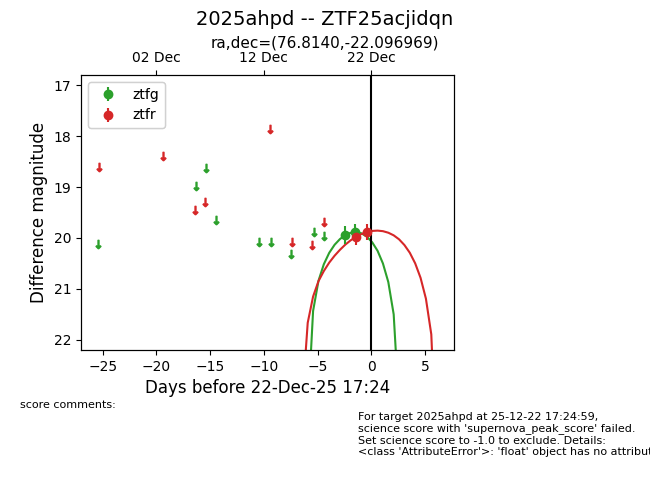
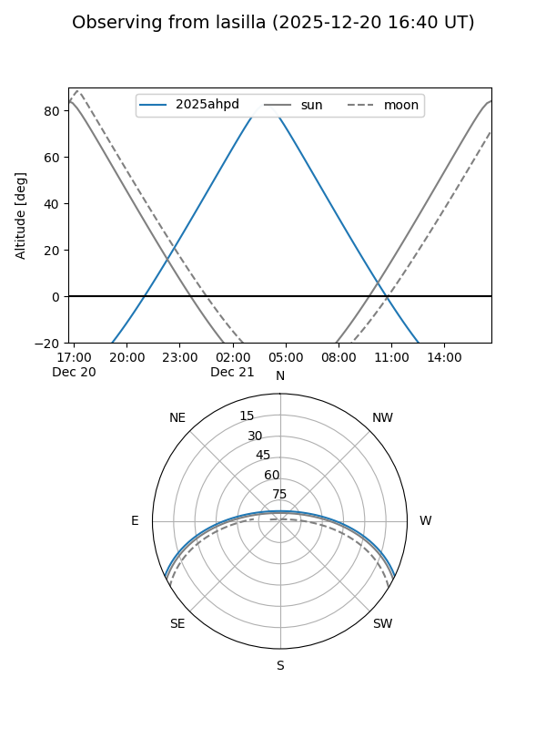
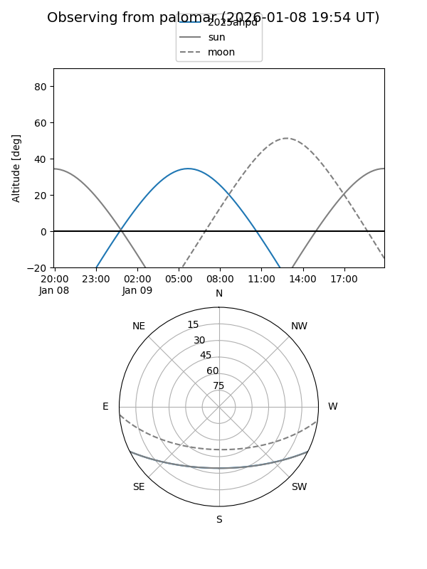
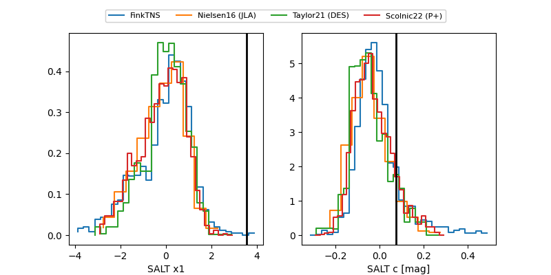

2025ahpd
Target 2025ahpd at 2025-12-22 14:03
Aliases and brokers:
FINK: fink-portal.org/ZTF25acjidqn
Lasair: lasair-ztf.lsst.ac.uk/objects/ZTF25acjidqn
ALeRCE: alerce.online/object/ZTF25acjidqn
TNS: wis-tns.org/object/2025ahpd
YSE: ziggy.ucolick.org/yse/transient_detail/2025ahpd
alt names
ZTF25acjidqn (ztf,fink_ztf)
2025ahpd (tns,yse)
Coordinates:
equatorial (ra, dec) = 76.8140,-22.09697
equatorial (HMS+DMS) = 05:07:15.35,-22:05:49.09
galactic (l, b) = (223.0986,-32.24949)
Flags:
Photometry:
last ztfg=19.89, ztfr=19.98
2 ztfg, 1 ztfr detections
Lightcurve

Visibility


Additional plots
